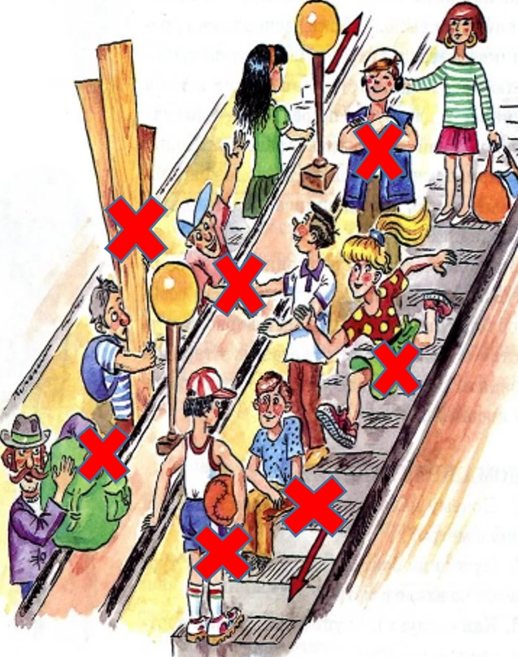
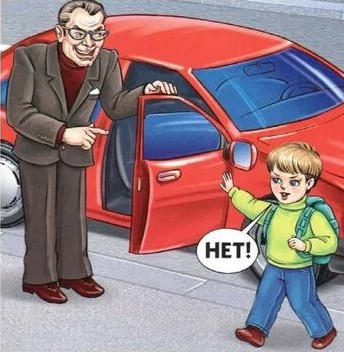
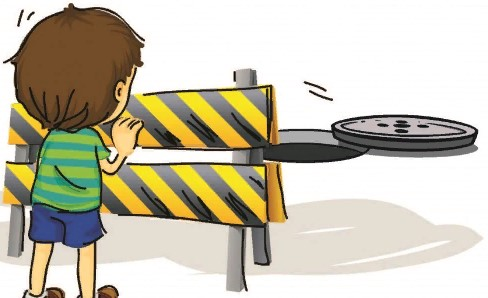
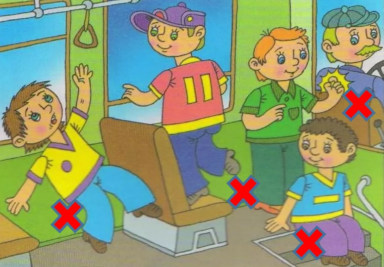
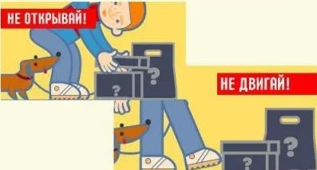
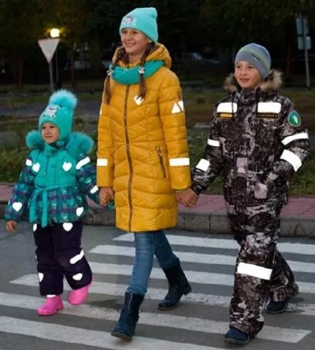

|
Как вести себя на эскалаторе.
В толпе согни руки в локтях, прижми к груди, рюкзак держи впереди себя, это придаст тебе устойчивость.
На эскалаторе стой справа, лицом по ходу движения, потому что по левой стороне идут люди.
Не ставь на поручень предметы, так как они могут покатиться вниз.
Если одежда попала в механизм эскалатора, быстрее сними ее, чтобы тебя самого не потащило вслед за одеждой.
При сходе с эскалатора быстро проходи вперед, чтобы тебя не толкнули идущие сзади люди.
|

|
Если с тобой заговорил незнакомец.
Не позволяй незнакомцу приближаться к тебе, уходи в безопасном направлении, взрослый человек может быть опасен для ребёнка.
|

|
Если ты увидел открытый люк.
Обойди люк стороной, при приближении к нему ты можешь оступиться и упасть в люк.
Позвони на номер «112», или попроси взрослых сделать это: экстренные службы ликвидируют аварию.
|

|
Автобус тронулся – посадка завершена.
Крепко держись за поручни, стой боком по направлению движения, чтобы проходящие мимо люди не отодвинули тебя от поручня.
Держись подальше от выхода, если до твоей остановки еще далеко. Не мешай пассажирам, которые выходят.
|

|
Если ты обнаружил подозрительный предмет в транспорте.
Не трогай предмет, не прикасайся к нему, не приближайся, он может быть опасен. Сообщи кондуктору или водителю транспортного средства.
|

|
Всегда носи на одежде светоотражающие элементы.
Так ты будешь заметен для водителей на дороге, чтобы в тёмное время суток тебя не сбила машина.
Старайся не гулять в темное время суток. Если задержался, то проси родителей тебя встретить. Вечером ты можешь встретить недобрых людей, которые могут тебе навредить.
|